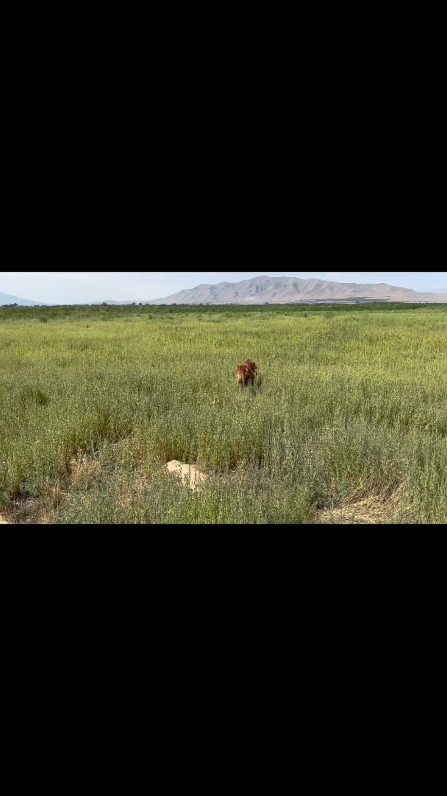

Episode 11 · August 03, 2023 · 710
Part Two! On the way home....Did I end up picking a dog and what one?

About This Episode
Questions about the training topics in this episode? Tyce works with bird dog owners and hunters through Utah Bird Dog Training. Reach out to work with him directly.
Resources & Links
- Utah Bird Dog Training — Work directly with Tyce — professional bird dog training services in Utah.
Transcript
Full transcript for Episode 11: Part Two! On the way home....Did I end up picking a dog and what one?.
Tyce
Hey everyone, welcome to the Bird Dog Podcast. My name is Tyce. This is part two of the puppy selection story — the drive home. In the last episode I went through what I look for when I'm evaluating a litter. Today I want to tell you how this particular visit went, which dog I chose, and why.
When you get to a litter and you're standing in front of six or eight puppies, there's a natural pull toward the boldest one — the one that climbs on you first, demands the most attention, runs at everything. That's the one people often pick. And it's not always wrong. But it's not automatically right either. What I'm watching for is confidence that's accompanied by tractability. A pup that's bold but also checks back with you, that's driven but can be redirected — that's the dog I want. A pup that's so keyed up it can't stop moving and won't engage with you at all is showing you something about its temperament that's going to challenge you through training.
I also watch retrieve interest. I'll toss a small bumper or crumpled paper and just see what happens. Does the pup go after it? Does it pick it up? Does it carry it toward me or take it somewhere else? Natural retrieve desire varies a lot even within a litter, and a pup that shows genuine drive to pick things up and bring them to you is going to be easier to train to a finished retrieve than one you have to build that desire into from scratch.
On this trip, I narrowed it down and chose the dog based on a combination of things — retrieve interest, the way it responded to gentle handling pressure, how it interacted with the litter, and just that gut feeling that comes after you've evaluated a lot of dogs. The health testing and the lineage were solid. The parents had been proven in the field. At that point you're looking for the individual that fits what you need.
The drive home is always a mix of excitement and that quiet moment where you think about everything you're signing up for — the training, the hunting, the years ahead with this animal. That's the part I love about bird dogs. You pick one of these pups and you're making a commitment to build something together. Done right, a well-trained hunting dog is one of the most satisfying things you can put years into. Thanks for listening.
About the Host
Tyce Erickson
Tyce Erickson is a professional bird dog trainer and the owner of Utah Bird Dog Training in Utah. For nearly two decades he has worked with pointing dogs, retrievers, and family hunting dogs — helping owners build dogs that are capable and enjoyable in the field. The Bird Dog Podcast is an extension of that work: honest conversations on training, hunting, breeding, and everything that goes into a life spent working dogs.
More About Tyce